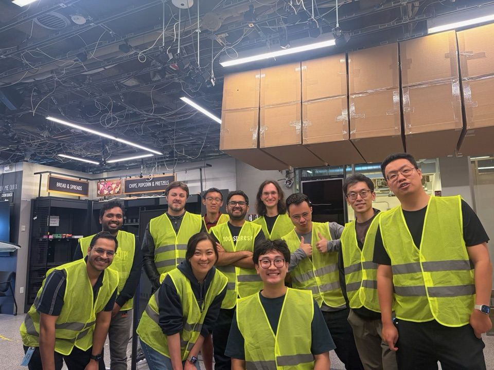
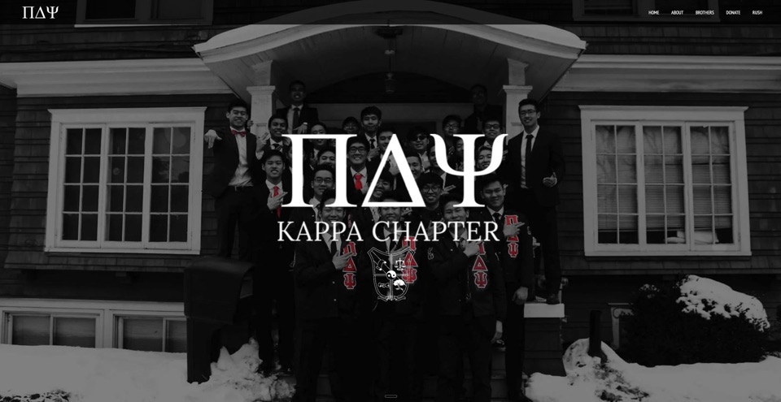
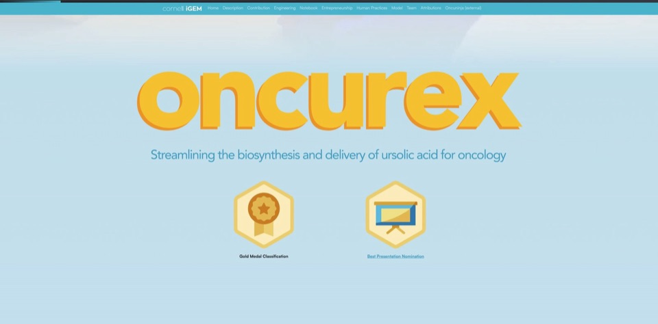

Experience
-
Summer 2026
Software Engineering Intern
Amazon Web Services
- What I did
- I built an employee-identification feature for Amazon Just Walk Out, the checkout-free shopping technology. It connected three Kotlin services using AWS SQS, SNS, S3, and DynamoDB, along with a Python computer vision pipeline.
- Impact
- In testing, it identified 91% of employee sessions with zero false positives, and a downstream team projects it will cut manual review by about 70% across 450 stores.

Personal reflection
During one of my design reviews, an engineer pushed back on where I triggered my feature in the pipeline. I had proposed later in the pipeline, and he thought it should be earlier. Instead of just picking one, we talked it through with more engineers, and they agreed my spot made sense for now but asked me to build it so the trigger could be moved later. That changed how I think about design.
-
Spring 2026
Teaching Assistant, CS 4670
Cornell Teaching Assistant
- What I did
- I helped teach 170+ students in Cornell’s computer vision course through office hours, and worked on PyTorch assignments covering neural networks and image segmentation.
- Impact
- I helped standardize grading across our 20-person course staff so every student got consistent feedback.
Personal reflection
As a TA, I found myself needing to explain technical concepts to students, which I realized I didn't have a lot of experience with. Every student learns differently, so I got a lot of experience explaining ideas in different ways. Now that I've explained computer vision concepts, I've learned the importance of how explaining things to others helps you understand them better yourself.
-
Summer 2025
Software Engineering Intern
Nonlinear
- What I did
- I built an AI workflow builder with FastAPI, React, and LangChain that let construction firms automate their document review without the need for technical expertise.
- Impact
- Two architecture and construction firms tested the product and loved the effectiveness and intuitivity of the product.
Personal reflection
On my first project, my manager told me we were falling behind because I was trying to make everything perfect instead of usable. I took that feedback, cut back scope, and shipped a working version in a few weeks so the founders could demo it to customers. I learned that building a simple foundation matters more than polishing the perfect product on the first try.
-
Fall 2024 - Fall 2025
Front-End Developer
Cornell Pi Delta Psi
- What I did
- I redesigned every page of our chapter's website and added a donation page using Next.js and React.
- Impact
- The chapter still uses the site to recruit new members every rush season, and alumni can now donate online.
Visit the website (opens in a new tab)
Personal reflection
When I first looked at our website, it looked pretty old and primitive, and I realized it was usually the first thing a rush candidate or alum saw of us. Instead of fixing a few pages, I decided to redesign all of them to make the site cleaner and more visually appealing, and I added a donation page to get more people to support the fraternity.
-
Fall 2023 - Fall 2024
Front-End Developer
Cornell iGEM
- What I did
- I built our team's 2024 competition website with five other people using HTML, CSS, and JavaScript. It was our official project submission for the iGEM Grand Jamboree, an international synthetic biology competition.
- Impact
- The site showed our Oncurex research to the judges, and our team won a Gold Medal at the 2024 Jamboree.
Visit the website (opens in a new tab)
Personal reflection
Six of us worked on the site, and each person built different pages. To make sure it still felt like one website, we set up a shared stylesheet before anyone started, so the colors, fonts, and layouts all matched. I realized that agreeing on the shared parts early is what let all of us work at the same time without blocking with each other. Now when I start a team project, I try to figure out what everyone needs to share, like styles or naming, before we split up the work.